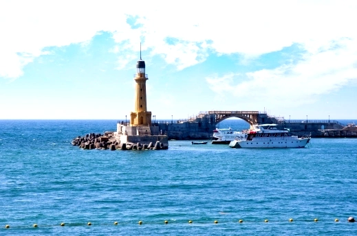

منارة الاسكندرية

منارة الاسكندرية
فنار الإسكندرية أو منارة الإسكندرية (باليونانية: Φάρος της Αλεξάνδρειας) - فاروس الإسكندرية - من عجائب الدنيا السبع التي ذكرها الإغريق، وكان موقعها على طرف شبه جزيرة فاروس وهي المكان الحالي لقلعة قايتباي بمدينة الإسكندرية المصرية. تعتبر أول منارة في العالم. أقامها سوستراتوس في عهد بطليموس الثاني عام 270 ق.م وكانت ترتفع 120 مترًا ودمرت في زلزال عام 1323.
وصف المنارة
الثابت تاريخياً أن فنار الإسكندرية التي كانت من عجائب الدنيا السبع، قد أُنشأت عام 280 ق.م، في عصر«بطليموس الثاني»، وقد بناها المعماري الإغريقي«سوستراتوس»، وكان طولها البالغ مائةً وعشرين متراً، ويعتقد البعض أن الحجارة المستخدمة في بناء قلعة قايتباي هي من أحجار الفنار المدمر، كما أن موقع القلعة هو ذاته موقع فنار المنهار، وقد وصف«المسعودي»، في عام 944 م، الفنار وصفاً أميناً، وقدَّر ارتفاعها بحوالي 230 ذراعاً. وقد حدث زلزال 1303 م في عهد السلطان«الناصر محمد بن قلاوون»، فضرب شرق البحر المتوسط، ودمر حصون الإسكندرية وأسوارها ومنارتها.
وقد وصف «المقريزي»، في خططه، ما أصاب المدينة من دمار، وذكرَ أن الأمير «ركن الدين بيبرس الجاشنكير» قد عمَّر المنارة، أي رمَّمها، في عام 703 هـ. وبعد ذلك الزلزال المدمر بنصف قرن، زار «ابن بطوطة» الإسكندرية، في رحلته الثانية، في عام 1350م، وكتب يقول:« وقصدتُ المنارة، عند عودتي إلى بلاد المغرب، فوجدتها قد استولى عليها الخراب، بحيث لا يمكن دخولها ولا الصعود إليها؛ وكان «الملك الناصر»، شرع في بناء منارة بإزائها، فعاقه الموت عن إتمامها.
ويروي المؤرِّخ المصري«ابن إياس»، أنه عندما زار السلطان «الأشرف قايتباي» الإسكندرية، في عام 1477م، أمر أن يُبنى مكان الفنار برج جديد، وهو ما عُرف فيما بعد ببرج قايتباي، ثم طابية قايتباي، التي لا تزال قائمةً، حتى اليوم.
لوحة من القرن السادس عشر تصور الفنار لمارتن همسكريك
وكان الفنار يتألَّف من أربعة أقسام، الأوَّل عبارة عن قاعدة مربَّعة الشكل، يفتح فيها العديد من النوافذ، وبها حوالي 300 غرفة، مجهَّزة لسكنى الفنيين القائمين على تشغيل المنار وأُسرهم. أما الطابق الثاني، فكان مُثمَّن الأضلاع، والثالث دائرياً، وأخيراً تأتي قمة الفنار، حيث يستقر الفانوس، مصدر الإضاءة في المنارة، يعلوه تمثال لإيزيس ربه الفنار ايزيس فاريا.
ومن الطريف، أن اسم جزيرة «فاروس» أصبح عَلَماً على اصطلاح منارة، أو فنار، في اللغات الأوربية، واشتُقَّت منه كلمة «فارولوجيا» للدلالة على علم الفنارات.
وقال جراتيان لوبير إن المنارة القديمة كانت مشيدة على صخرة تلاطمها مياه البحر من كل مكان وكانت ترتفع لعدة طوابق، ويحيط بكل طابق منها دهليز يدعمه صف من الأعمدة، وفي الليل يضيء البرج الموجود أعلاها شعلتين يراهما المسافر على بعد 300 غلوة من عرض البحر، أما في النهار فكان في البرج مرآة معدنية تنبه السفن للشاطئ قبل ظهوره في الأفق، وقد بنيت بعض أحجارها أنقاض مدن هليوبوليس وممفيس وطيبة، حيث نقلت إليها أعمدة ومسلات من المدن الفرعونية القديمة بتكاليف
كيفية عمل المنارة
ولم يعرف أحد، يقيناً، كيف كانت تعمل المنارة، أو الفنار، وقد ظهرت بعض الاجتهادات، لم يستقر الخبراء وعلماء التاريخ على أيٍ منها. وثمَّة وصفٌ لمرآة ضخمة، كاسرة للآشعة، في قمة الفنار، كانت تتيح رؤية السفن القادمة، قبل أن تتمكن العين المجرَّدة من رصدها.
وقد كتب الرحَّآلة العربي القديم«ابن جبير»، أنَّ ضوء الفنار كان يُرى من على بُعد 70 ميلاً، في البحر. وهناك رواية تُفيد بأن مرآة الفنار، وكانت إحدى الإنجازات التقنية الفائقة في عصرها، قد سقطت وتحطَّمت في عام 700م، ولم تُستبدل بغيرها وفقد الفنار صفته الوظيفية منذ ذلك الوقت، وقبل أن يدمِّره الزلزال تماماً.
ويُقال أن الصعود إلى الفنار، والنزول منه، كان يتم عن طريق منحدر حلزوني أما الوقود، فكان يُرفعُ إلى مكان الفانوس، في الطابق الأخير، بواسطة نظام هيدروليكي. وقد وصف فورستر طريقة أخرى لرفع الوقود (الخشب) إلى موقع الفانوس، فذكرَ أن صفَّاً طويلاً من الحمير كان في حركة دائبة، لايتوقف ليلاً أو نهاراً، صعوداً ونزولاً، عبر المنحدر الحلزوني، تحمل الوقود الخشبي على ظهورها.
وفي مُفتتح القرن العشرين، قدَّم الأثري والمعماري الألماني«هرمان ثيرش» نموذجاً للفنار، في هيئة أقرب إلى نُصُب تذكاري، يرتفع كبرج فخم مكوَّن من ثلاثين طابقاً، ويحتوي على 300 غرفة.